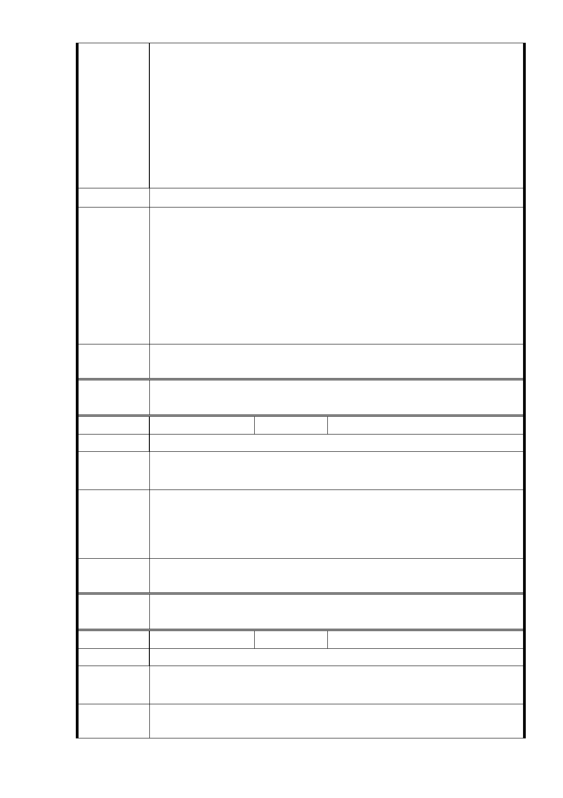

符合公平正義。
三、 臺北市政府的公營住宅政策，預計增加 1500 戶，建請將
社會福利設施之使用組別，亦可規劃在商業區（原為廣慈
博愛院址）。
四、 依「臺北市土地使用分區管制規則」第八十三條，其中機
關用地之容積率與建蔽率的規定，但無「社會福利設施用
地」之項目與規定；本次「修訂『變更……主要計畫』開
發強度規定案」中，怎可援引「機關用地」之容積率與建
蔽率，當成「社會福利設施用地 」的開發強度。
建議辦法
1 .反對社福用地容積率由21 0％回復至400％及交通影響部分，同
編號1回復內容。又本案係經評估公共設施服務水準可維持之
前提下，提高社會福利設施用地之容積率至400%，並非比照
市 府 回 應 變更前機關用地容積率。
意 見 2.有關於林口街80巷退縮20公尺綠帶部分，同編號2回復內容。
3.依本案95年計畫土地及建築物使用管制規定，社會福利設施用
地得設置多戶住宅或寄宿住宅，故設置公營出租住宅尚無疑
慮。
專案小組
審查結論
同編號 1。
委
決
員
會
議
同編號 1。
編號
13
陳情人 陳○雲
陳 情 理 由 反對要蓋 1500 戶的出租住宅。
建 議 辦 法 除了蓋像北投國際水準的圖書館及信義區的里民活動中心外，其
他整建為藝術森林公園，如此方為世界級好好看的大臺北。
1 .有關調整分區規劃部分，同編號1 回復內容。
市 府 回 應 2.有關反對本府規劃公營出租住宅部分，同編號2回復內容。
意 見 3.另社會福利設施用地內亦規劃圖書館及活動中心等相關設
施，未來亦將徵求知名建築師進行規劃設計。
專案小組
審查結論
同編號 1。
委
決
員
會
議
同編號 1。
編號
14
陳情人 賴○鵬
陳 情 理 由 反對蓋 1500 戶的出租住宅。
建議辦法
四周道路 1.福德街、2.大道路、3.福德街 84 巷、4.林口街 80 巷
等馬路，都要拓寬現有的 2 倍。
市 府 回 應 1.有關反對本府規劃公營出租住宅部分，同編號2回復內容。
意 見 2.有關道路拓寬部分，同編號7回復內容。
- 45 -